1과목: 공기조화
1. 우리나라에서 오전 중에 냉방 부하가 최대가 되는 존(Zone)은 어느 방향인가?
2. 환기방식 중 송풍기를 이용하여 실내에 공기를 공급하고, 배기구나 건축물의 틈새를 통하여 자연척으로 배기하는 방법은?
3. 냉수코일의 설계에 있어서 코일 출구온도 10℃, 코일 입구온도 5℃, 전열부하 83740kJ/h일 때, 코일 내 순환수랑(L/min)은 약 얼마인가? (단, 물의 비열은 4.2kJ/kgㆍK 이다.)
4. 공기조화 부하계산을 할 때 고려하지 않아도 되는 것은?
5. 냉수 또는 온수코일의 용랑제어를 2방 밸브로 하는 경우 물배관계통의 특성 중 옳은 것은?
6. 인체에 작용하는 실내 온열환경 4대요소가 아닌 것은?
7. 바이패스 팩터에 관한 설명으로 옳지 않은 것은?
8. 공기 세정기에 관한 설명으로 옳지 않은 것은?
9. 염화리륨, 트리에틸맨 글리콜 등의 액체를 사용하여 감습하는 장치는?
10. 증기난방에 관한 설명으로 옳지 않은 것은?
11. 공기조화 방식의 문류 중 공기-물 방식이 아닌 것은?
12. 도서관의 체적이 630m3이고 공기가 1시간에 29회 비율로 틈새바람에 의해 자연 환기될 때 풍랑(m3/min)은 약 얼마인가?
13. 다음 그림은 송풍기의 특성 곡선이다. 점선으로 표시된 곡선 B는 무엇을 나타내는가?
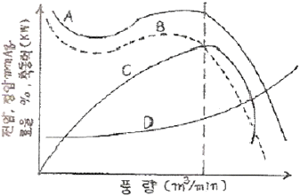
14. 덕트 설계 시 고려하지 않아도 되는 사항은?
15. 실내의 기류분포에 관한 설명으로 옳은 것은?
16. 증기-물 또는 물-물 열교환기의 종류에 해당되지 않는 것은?
17. 공기 중의 수증기 분압을 포화압력으로 하는 온도를 무엇이라 하는가?
18. 보일러의 출력표시에서 난방부하와 급탕부하를 합한 용랑으로 표시되는 것은?
19. 온수배관 시공 시 주의할 사향으로 옳은 것은?
20. 습공기선도상에 나타나 있는 것이 아닌 것은?
2과목: 냉동공학
21. 냉동장치의 안전장치 중 압축기로의 흡입압력이 소정의 압력 이상이 되었을 경우 과부하에 의한 압축기용 전동기의 위험을 방지하기 위하여 설치되는 기기는?
22. 열원에 따른 열펌프의 종류가 아닌 것은?
23. 팽창밸브 입구에서 410kcal/kg의 엔탈피를 갖고 있는 냉매가 팽창밸브를 통과하여 압력이 내려가고 포화액과 포화증기의 혼합물, 즉 습증기가 되었다. 습증기 중 포화액의 유랑이 7kg/min일 때 전 유출 냉매의 유랑은 약 얼마인가? (단, 팽창밸브를 지 난 후의 포화액의 엔탈피는 54kcal/kg, 건포화증기의 엔탈피는 500kcal/kg이다.)
24. 매분 염화칼슘 용액 350L/min를 -5℃에서 -10℃까지 냉각시키는 데 필요한 냉동능력은 얼마인가? (단, 염화칼슐 용액의 비중은 1.2, 비열은 0.6kcal/kgf℃ 이다.)
25. C.A 냉장고(Controlled Atmosphere Storage Room)의 용도로 가장 적당한 것은?
26. 압축기 직경이 100mm, 행정이 850mm, 회전수 2,000rpm, 기통 수 4일 때 피스톤 배출량은?
27. 냉매와 화학분자식이 옳게 짝지어진 것은?
28. 2원 냉동장치의 저온측 냉매로 적합하지 않은 것은?
29. 냉매가 구비해야 할 이상적인 물리적 성질로 틀린 것은?
30. 2단 압축 2단 팽창 냉동장치에서 중간냉각기가 하는 역할이 아닌 것은?
31. 다음 냉매 중 아황산가스에 접했을 때 흰 연기를 내는 가스는?
32. 교축작용과 관계가 적은 것은?
33. 10℃와 85℃ 사이의 물을 열원으로 역카르노 사이클로 작동되는 냉동기(εC)와 히트펌프(εH)의 성적계수는 각각 얼마인가?
34. 팽창밸브가 과도하게 닫혔을 때 생기는 현상이 아닌 것은?
35. 공랭식 응축기에 있어서 냉매가 응축하는 온도는 어떻게 결정하는가?
36. 흡수식 냉동기에 대한 설명 중 옳은 것은?
37. 온도식 팽창밸브에서 흐르는 냉매의 유량에 영향을 미치는 요인이 아닌 것은?
38. 암모니아 냉동장치에 대한 설명 중 옳은 것은?
39. 할로겐 원소에 해당되지 않는 것은?
40. 다음 열역학적 설명으로 옳지 않은 것은?
3과목: 배관일반
41. 흄(Hume)관이라고도 하는 관은?
42. 가스배관의 기밀시험 방법에 관한 설명으로 옳은 것은?
43. 열팽창에 의한 배관의 신축이 방열기에 영향을 주지 않도록 방열기 주위 배관에 일반적으로 설치하는 신축이음쇠는?
44. 관의 결합방식 표시방법 중 용접식 기호로 옳은 것은?
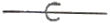
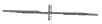
45. 급탕배관에 대한 설명으로 옳지 않은 것은?
46. 냉각탑을 사용하는 경우의 일반적인 냉각수 온도 조절 방법이 아닌 것은?
47. 3세주헝 주철제방열기 3-600을 설치할 때 사용증기의 온도가 120℃이고, 실내공기의 온도가 20℃, 난방부하 10000kcal/h를 필요로 하면 설치할 방열기의 소요 쪽수는 얼마인가? (단, 방열계수는 7.9(kcal/m2h℃)이고, 1쪽당 방열면적은 0 13m2이다.)
48. 트랩의 봉수 유실 원인이 아닌 것은?
49. 컴퓨터실의 공조방식 중 바닥 아래 송풍방식(프리액세스 취출방식)의 특징이 아닌 것은?
50. 연단에 아마인유를 배합한 것으로 녹스는 것을 방지하기 위하여 샤용되며 도료의 막이 굳어서 풍화에 대해 강하고 다른 착색도료의 밀칠용으로 널리 사용되는 것은?
51. 도시가스를 공급하는 배관의 종류가 아닌 것은?
52. 냉매배관 중 토출 측 배관 시공에 관한 실명으로 틀린 것은?
53. 하나의 장치에서 4방 밸브를 조작하여 냉ㆍ난방 어느 쪽도 사용할 수 있는 공기조화용 펌프는?
54. 나사용 패킹으로 냉매배관에 많이 사용되며 빨리 굳는 성질을 가진 것은?
55. 증기난방 설비의 수평배관에서 관경을 바꿀 때 사용하는 이음쇠로 가장 적합한 것은?
56. 공기 여과기의 분진포집 원리에 의해 분류한 집진형식에 해당되지 않는 것은?
57. 도시가스 배관의 나사이음부와 전기계량기 및 전기개폐기의 거리로 옳은 것은?(오류 신고가 접수된 문제입니다. 반드시 정답과 해설을 확인하시기 바랍니다.)
58. 배수계통에 설치된 통기관의 역할과 거리가 먼 것은?
59. 배수배관의 시공상 주의사항으로 틀린 것은?
60. 호칭지름 25A인 강관을 R150으로 90℃ 구부럼할 경우 곡선부의 길이는 악 몇 mm인가? (단, π는 3.14이다.)
4과목: 전기제어공학
61. 그림과 같은 논리회로의 출력 Y는?
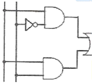
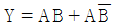
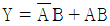
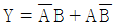
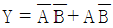
62. PC에 의한 계측에 있어, 센서에서 측정한 데이터를 PC에 전달하기 위해 필요한 필수적인 요소는?
63. 그림과 같이 실린더의 한쪽으로 단위시간에 유입하는 유체의 유랑을 x(t)라 하고 피스톤의 움직임을 y(t)로 한다. 시간이 경과한 후의 전달함수를 구해보면 어떤 요소가 되는가?
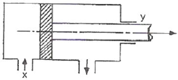
64. 그림과 같은 회로는 어떤 논리회로인가?
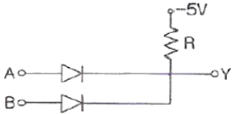
65. 전달함수를 정의할 때의 조건으로 옳은 것은?
66. 다음 중 동기화 제어변압기로 사용되는 것은?
67. 120Ω의 저항 4개를 접속하여 가장 작은 저항값을 얻기 위한 회로 접속법은 어느 것인가?
68.
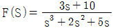
일 때의 최종치는?69. 역률 80%인 부하의 유효전력이 80kW이면 무효전력은 몇 kVar인가?
70. 변압기를 스코트(Scott) 결선할 때 이용률은 몇 %인가?
71. 자동제어계의 구성 중 기준입력과 궤환신호의 차를 계산해서 제어계가 보다 안정된 동작을 하도록 필요한 신호를 만들어 내는 부분은?
72. 유도전동기의 고정손에 해당하지 않는 것은?
73. 다음 블록선도의 입력 R에 5를 대입하면 C의 값은 얼마인가?
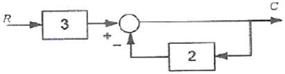
74. 교류에서 실효값과 최댓값의 관계는?
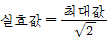
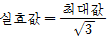
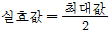
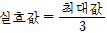
75.
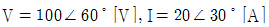
일 때 유효전력은 악 훌[W] 인가?76. 축전지의 용랑을 나타내는 단위는?
77. 그림과 같은 회로의 전달함수는?
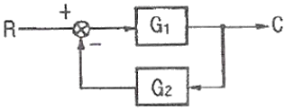
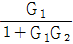
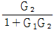
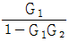
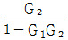
78. 전류에 의해 생기는 자속은 반드시 폐회로를 이루며, 자속이 전류와 쇄교하는 수를 자속 쇄교수라 한다. 자속 쇄교수의 단위에 해당되는 것은?
79. 유도전동기의 1차 전압 변화에 의한 속도제어 시 SCR을 사용하여 변화시키는 것은?
80. 제어기기의 대표적인 것으로는 검출기, 변환기, 증폭기, 조작기기 를 들 수 있는데 서보모터는 어디에 속하는가?